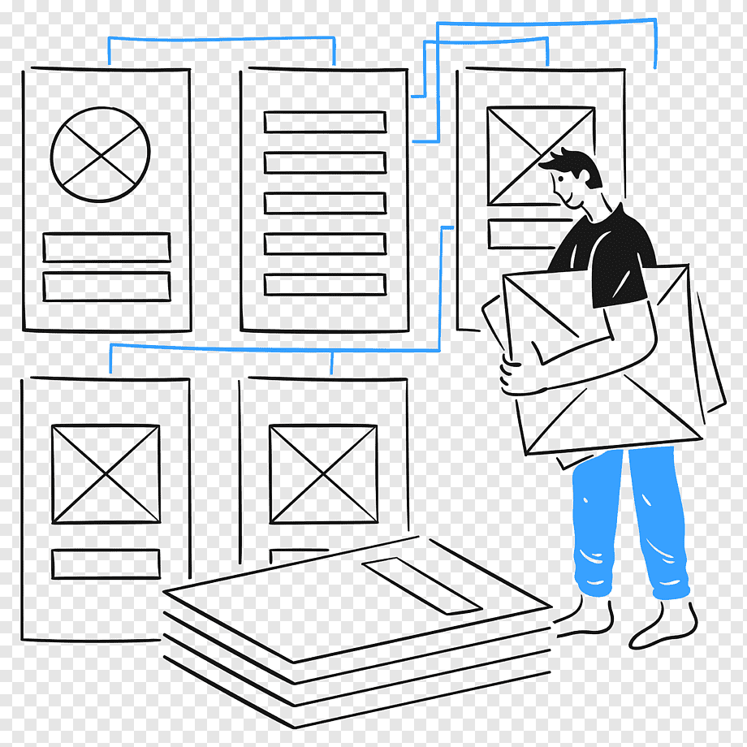

What Is a README File?
A README file introduces a project, explains how to use it, and guides
contributors. It provides essential instructions, context, and workflow
details so everyone understands how the project works.
Want to learn how to write a clear README file?
Read this guide on writing a good README
.

What Is a Wireframe?
A wireframe is a simple visual layout that shows the structure of a webpage
or app. It helps teams plan features, organize content, and understand user
flow before any coding begins.
Want to dive deeper into the concept of wireframes?
Read Figma’s guide to wireframing
.
What Is a Branch in Git?
A branch in Git is a separate line of development where you can make changes
without affecting the main project. It lets you work on new features, fix
bugs, or experiment safely. When your work is ready, the branch can be
merged back into the main codebase.
Want to understand how Git branches work?
Read this guide on Git branching
.